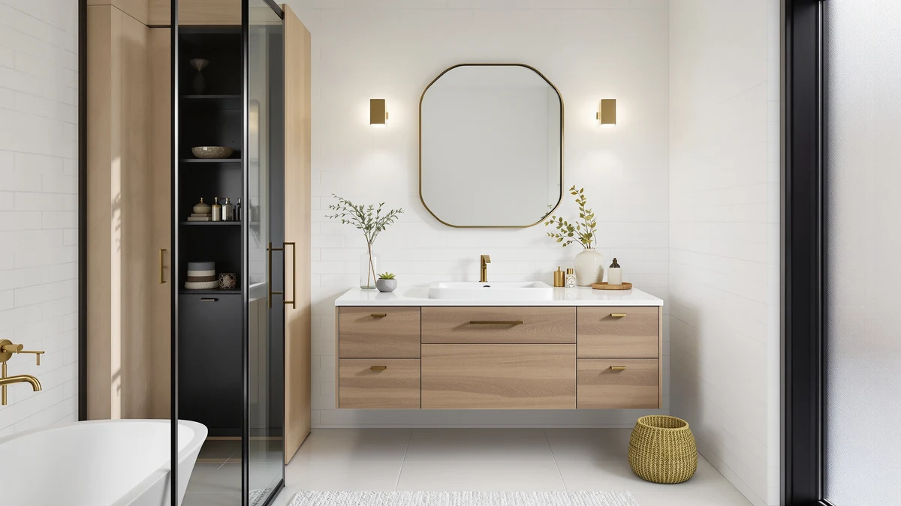

Best How to Choose Vanity Finish (2026) | Best Bathroom Vanities


Things to Know Before You Buy
- Moisture comes first. Your bathroom's humidity decides which finishes are even on the table. A sealed painted finish shrugs off steam, while raw or veneered wood swells when an exhaust fan can't keep up.
- Undertone matters more than exact color. You want your vanity finish to share a warm or cool undertone with your faucet, lighting, and trim. Matching everything exactly tends to look flat.
- Each finish type trades cost for durability. Painted finishes cost more but seal best, thermofoil sits in the middle, and natural wood gives you the richest look in exchange for steady upkeep.
- Lighting changes the color. The same swatch reads warmer at night under a vanity light and cooler at midday by a window. Test before you commit.
- Dark finishes show every spot. Espresso and black surfaces look striking but reveal water marks, toothpaste, and dust faster than mid-tone wood or white.
Learning how to choose vanity finish options for your bathroom starts with a plain fact: the finish takes more daily abuse than almost any other surface in the room. Water and steam hit it all day, and toothpaste dries on it every morning. The color you fall for in a showroom photo means little if it swells or shows every smudge six months after you install it. So before you pick a shade, you need a process that weighs durability and your real lighting alongside looks.
This guide walks you through that process in five concrete steps. You will gauge your bathroom's moisture, match the finish undertone to the hardware you already own, compare the main finish types on cost and toughness, test swatches in your own light, and confirm the maintenance you can keep up with. Work through them in order and you will land on a vanity finish that still looks right two years from now, long after the new-install shine wears off.
What You'll Need
- Supplies: finish or paint sample swatches, painter's tape, a notepad for measurements and undertone notes
- Tools: a tape measure and your phone camera
Step 1: Gauge your bathroom's moisture and ventilation
Before you weigh a single color, figure out how wet your bathroom actually gets, because that decides which finishes survive. Run a hot shower for ten minutes, then watch how long the mirror stays fogged and whether water beads on the walls. A mirror that clears in a minute tells you the exhaust fan moves air well. One that stays fogged for ten minutes warns you that humidity lingers, and lingering humidity is what makes a vanity finish swell at the seams or lift at the edges.
Knowing how to choose vanity finish materials for your specific moisture level keeps you from overpaying or under-buying. In a windowless bathroom with a weak fan, you want a sealed painted finish or a quality thermofoil that wraps the surface and blocks water. In a well-ventilated bathroom with a window you crack open, you have room to consider natural wood and veneers that would not last in a steam box. Note your situation on your pad, since you will refer back to it in Step 3.
Check the base of any existing vanity too. If you see swollen corners, dark water stains, or a finish peeling near the floor, your room runs humid and your next finish needs to be tougher than the last one.
Step 2: Match the finish undertone to your fixtures and hardware
Now look at what you are not replacing. Your faucet, drawer pulls, light fixtures, and trim all carry an undertone, and your vanity finish needs to sit comfortably next to them. Hold a sheet of white paper against your faucet and tile. If the surroundings look slightly yellow, orange, or red against the paper, you have warm undertones. If they look blue, gray, or green, you have cool undertones. This quick test cuts your finish options roughly in half and saves you from a vanity that fights the room.
When you choose vanity finish colors, aim to echo the undertone rather than copy the exact shade. Warm brushed-gold hardware pairs with honey oak, walnut, or a creamy off-white. Cool chrome or matte-black hardware sits better with gray-washed wood, true white, or a cool navy. You do not need a perfect match, and you should avoid one, because a vanity that matches every surface tends to read flat and builder-grade.
Write down your undertone verdict and the two or three finish families that fit it. Bring a drawer pull or a photo of your faucet when you shop so you compare against the real metal, not your memory of it.
Step 3: Compare the main finish types
With your moisture level and undertone settled, you can compare the four finish types you will meet most often. A painted finish, usually a baked-on or sprayed coat over wood or MDF, seals the surface tightly and resists humidity better than any other budget-friendly option. It costs more, and a deep scratch is harder to touch up, but it is the safest bet for a busy, steamy bathroom.
Thermofoil wraps a vinyl layer over an MDF core, giving you a smooth, wipeable surface at a lower price. It handles everyday splashes well, though it can peel or bubble near a heat source like a flat iron left on the counter. Laminate works similarly and shrugs off water, but seams can show and the look reads less premium up close. Natural wood and veneer deliver the richest grain and the most warmth, yet they demand sealing and steady upkeep, so they only make sense when you nailed good ventilation in Step 1.
As you choose vanity finish materials, line each type up against your three priorities: budget, durability, and look. A floating vinyl-wrapped vanity might win on price and moisture resistance, while a solid-wood piece wins on character but asks for more care. There is no single best finish, only the one that fits your bathroom and your tolerance for maintenance.
Step 4: Test samples in your own bathroom light
Showroom lighting and product photos can fool you, because every light source shifts color. Order swatches or small sample boards in your two or three finalist finishes, then tape them to the wall right where the vanity will go. Painter's tape holds them flat without leaving marks. This is the step most people skip, and it is the one that prevents an expensive surprise when the box arrives.
View each swatch three times across a full day. Look in the morning when daylight pours in, in the evening under your vanity light alone, and at midday with everything on. A warm oak can turn orange under a 2700K bulb, and a cool gray can go flat and lifeless without daylight. Snap a phone photo each time, since the camera often catches an undertone clash your eye glosses over. When you choose vanity finish colors this way, you judge the finish in the only room that matters.
Set your hardware sample or faucet photo from Step 2 next to each swatch during these checks. The pairing that still looks intentional in your worst lighting is the finish to trust.
Step 5: Confirm the maintenance you can live with
The last step matches your favorite finish to your cleaning habits, because the most durable surface still disappoints if it shows every mark and you rarely wipe it. Dark espresso and high-gloss black finishes look dramatic in photos, yet they reveal water spots, dust, and toothpaste splatter within hours. If you wipe the counter once a week rather than daily, a matte or satin mid-tone finish hides daily life far better and keeps the vanity looking clean between cleanings.
Think through the next two years before you commit. A glossy white painted finish wipes spotless but needs frequent attention to look its best. A textured or wood-grain finish forgives smudges and minor scratches, which suits a kids' bathroom or a high-traffic primary bath. When you choose vanity finish surfaces around your real routine, you avoid resenting the vanity every morning.
Once your finish passes the lighting test from Step 4 and the maintenance test here, you are ready to buy. Cross-check the finish name on the product listing against your swatch, since the same word can describe slightly different shades across brands.
Common Mistakes to Avoid
Most people who choose vanity finish options wrong make the same handful of errors, and each one is easy to dodge once you know it.
The first mistake is buying for the photo instead of the room. A finish that glows in a styled listing can fall flat under your actual bulbs, which is exactly why Step 4 exists. Order the swatch and test it before you trust the picture.
The second mistake is ignoring ventilation. Plenty of buyers install a beautiful wood-veneer vanity in a windowless bathroom with a tired fan, then watch the corners swell within a year. If your room runs humid, you give up some warmth and pick a sealed finish that survives.
The third mistake is matching everything. When the vanity, floor, trim, and walls all share the same shade, the bathroom reads flat and builder-grade. You want your finish to harmonize with the undertone of your hardware, not vanish into the room.
The fourth mistake is forgetting how you actually clean. A glossy dark finish looks sharp in the store and shows every fingerprint at home. Buyers who wipe the counter once a week regret a finish that demands daily attention. Match the surface to your routine instead of your best intentions, and the vanity stays looking good with the effort you are willing to put in.
Our Top Picks
Once you know how to choose vanity finish options that fit your bathroom, these three vanities give you a strong starting point across budgets. Each one pairs a durable, bathroom-ready finish with a footprint that suits a common layout, so you can apply the steps above to a real product.

Editor’s Pick
DELUXE LIVING 36 Inch Bathroom
A sealed painted finish and a 36-inch footprint make this the safe middle choice for a busy main bathroom that sees plenty of steam.
$349.99
Check Price on Amazon
Best Value
LIKIMIO 30" Bathroom Vanity with
A clean painted finish on a compact 30-inch frame gives small and guest bathrooms a durable surface without stretching your budget.
$239.99
Check Price on Amazon
Premium Choice
Glintee 40" Modern Floating Bathroom
A wall-mounted design and a contemporary finish suit a modern bathroom where you want a streamlined look and easy floor cleaning underneath.
$439.99
Check Price on AmazonFrequently Asked Questions
What is the most durable vanity finish for a bathroom?
A baked-on painted finish over solid wood or quality plywood holds up best in a humid bathroom because it seals the surface and resists swelling. Thermofoil performs well in mid-priced vanities but can peel near heat sources, and unsealed natural wood needs the most upkeep.
Should the vanity finish match the bathroom door and trim?
You do not need an exact match. Pick a finish that shares the same undertone as your trim, either warm or cool, so the room reads as intentional. A vanity that contrasts the walls while echoing the floor or hardware usually looks more deliberate than one that matches everything.
Do dark vanity finishes show water spots more than light ones?
Yes. Dark espresso and black finishes show dried water spots, toothpaste splatter, and dust faster than mid-tone wood or white. If your bathroom sees heavy daily use and you wipe the counter rarely, a matte mid-tone finish hides marks better between cleanings.
Is a matte or glossy vanity finish better?
A matte or satin finish hides fingerprints, smudges, and minor scratches, which suits a high-traffic bathroom. A glossy finish wipes perfectly clean and reflects light to brighten a small room, but it shows every mark, so it rewards frequent wiping.
Can I change a vanity finish later instead of buying new?
You can repaint a solid-wood or MDF vanity with a bathroom-grade primer and paint, and the result lasts when you prep and seal it well. You cannot reliably refinish thermofoil or vinyl-wrapped surfaces, since paint struggles to bond, so plan to choose the right finish the first time on those.
Verdict
Knowing how to choose vanity finish options comes down to a sequence, not a guess. You gauge your bathroom's moisture first, match the undertone to the hardware you already own, compare the finish types on cost and toughness, test swatches in your own light, and confirm the upkeep you will actually keep. Run those five steps in order and you skip the regret of a finish that swells, clashes, or shows every smudge.
If you want a dependable place to apply this, the DELUXE LIVING 36-inch vanity is the easiest starting point for most bathrooms. Its sealed painted finish handles steam, its mid-size footprint fits a typical main bath, and its neutral color works with both warm and cool hardware. Buyers on a tighter budget can step down to the LIKIMIO 30-inch, while a modern remodel suits the floating Glintee 40-inch. Whichever you pick, let your moisture level and your real lighting make the final call, and the finish will still look right years from now.